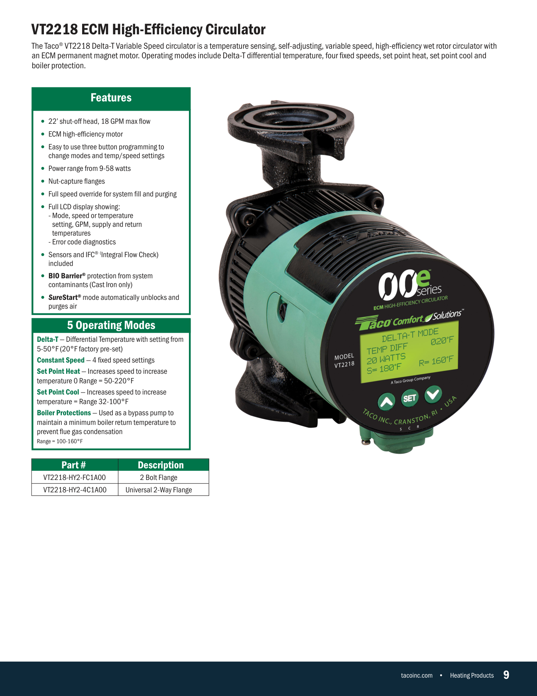

High-head variable-speed circulator with an on-board digital display. Two performance variants, HY1 and HY2, sharing the body and housing.
2 variants Catalog p.9 Digital display
This is our current VNTANA asset for the lead variant. Use it as the geometry, scale, and material reference for your rebuild. Below it is the source CAD download and the full variant list.
All source files (STEP, GLB, USDZ, FBX) for this family live in the shared VNTANA collection. Use Download All there, or pull the per-variant STEP.
| SKU | Variant | Connection | VNTANA reference |
|---|---|---|---|
| VT2218-HY1-4C1A00 | High-head | HY1 (4C1A00) | View 3D |
| VT2218-HY2-FC1A00 | High-head | HY2 (FC1A00) | View 3D |
Catalog specifications (page 9) and the reference photography. Match the physical proportions and finishes to these, not to your own interpretation.

When the family is built, self-QA against this checklist first, then upload to the VNTANA platform as a Draft and notify VNTANA for review. Do not mark anything final. VNTANA does the final approval.